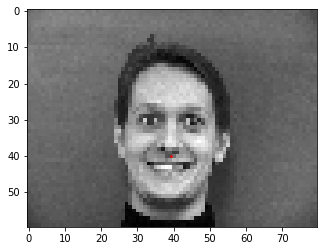
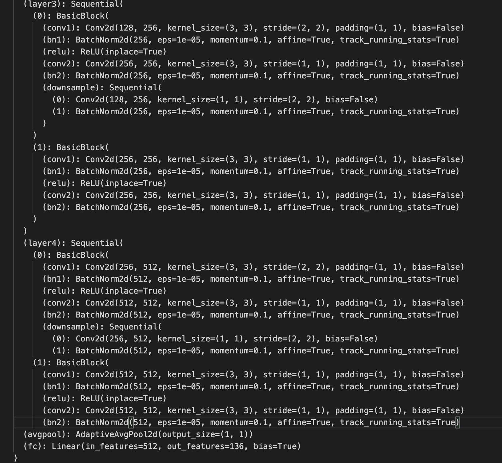
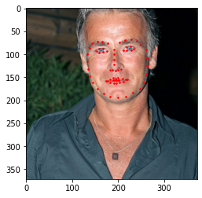

Overview In this project, I used CNN to detect Facial Keypoint on images.
Part 1: Nose Tip Detection
In this part, I built a simple CNN to detect the nose point. I first convert the images to size 80x60 and present it with the ground-truth keypoints.

Then I defined a simple CNN with 3 conv layers and two linear layers. I split the data to be 200 training images, and 40 val images. I trained 20 epochs and here are the training loss and val loss over epoch.
model structure
train loss
val loss
The results are not too good since it is a small net on a small dataset.
correct
correct
wrong
wrong
It predicts wrong on those who are facing the side. I think it is becuase this short CNN structure cannot capture the pattern of side face labeling in 20 epoches of training. Maybe training more epochs with deeper CNN can solve this problem.
Part 2: Full Facial Keypoints Detection
In this part, I added more conv layers to my CNN, and use it to predicts all facial points. Here are the ground-truth keypoints images. I also did data agumentation by flipping the image horizontally.
flipped
Then I added two more conv layers to my CNN. I noticed that adding batchnorm layers would increase the behavior, so I added two BN layers. Here is the detailed structure, train loss and val loss.
I trained with MSELoss, Adam optim, lr=0.001, 30 epochs.
model structure
train loss
val loss
Here are 2 decent predicts and 2 wrong predicts.
I think the model failed because 30 epochs are not enough epochs for my shallow CNN to fully learned the data. When I tried to use resnet18 to train on this dataset, it performs better in 30 epochs. I believe my current CNN is rather simple for my agumented dataset.
Green being true points. Red being predicted.
decent
decent
wrong
wrong
I visulaised 6 filters learned in each of 4 conv layers. (conv layer5 has large filters that cannot be plotted)
conv1
conv2
conv3
conv4
Part 3: Train With Larger Dataset
In this part, I am doing a full facial points detection on a large dataset. My Kaggle mean absolute error is 18.10342.
I modified pretrained resnet18. I changed the in_channel of the first conv layer to be 1, and the out_features of the last linear channel to be 136. Then I used MSELoss, Adam optimizer, and lr 0.01 to train the model for 30 epochs.
model structure first half

model structure second half
train loss
val loss
Here are some results on test set:

I run 40 more epochs on the model and test it on my own images, the results are not too bad
The first image is pretty good. I think it fails the second image because my bbox could be not so good. For the third one, it can detect it is a side face. I think it is because of the glasses, so the eyes part are labelled wrong.